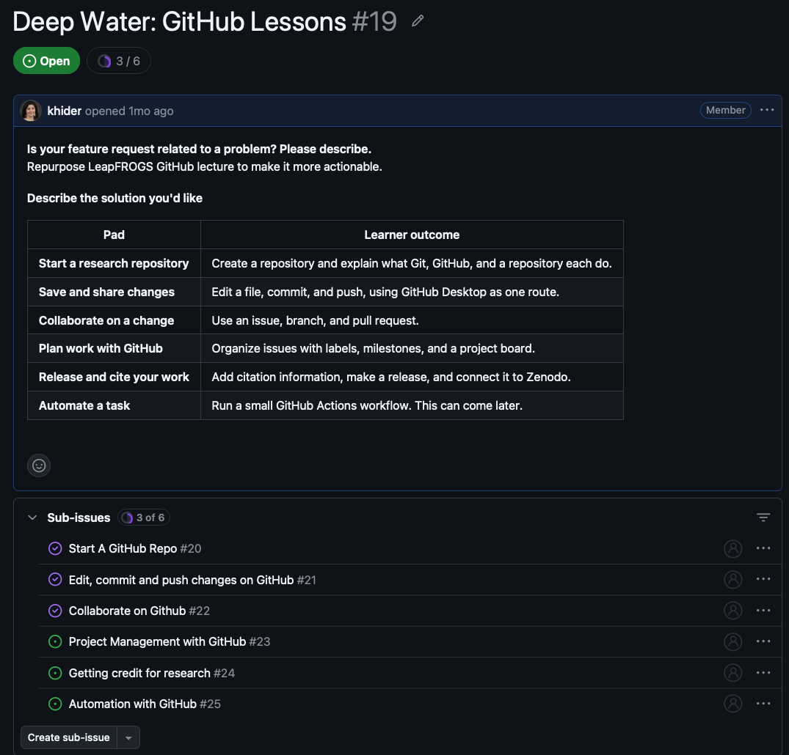
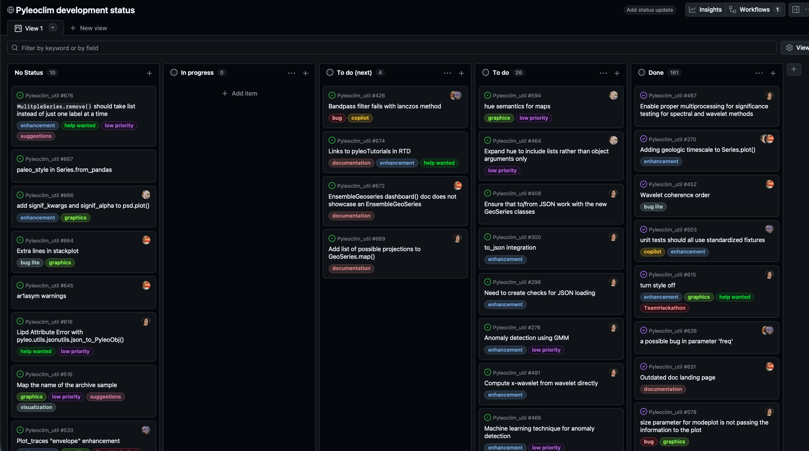

Plan Work with GitHub
Learn to use GitHub to plan and manage research projects. Practice creating issues, assigning tasks, and tracking progress.
Overview
In the previous lessons, you learned how to save changes, collaborate with others, and review proposed improvements to your research project.
But there’s an important question we haven’t addressed yet:
How do you decide what work needs to be done in the first place, and how do you keep track of it?
Research projects rarely follow a perfectly linear path. You might discover a problem in your data, identify a new analysis to explore, need feedback from your advisor, or realize that an upcoming conference deadline requires you to prioritize some tasks over others.
Keeping track of these activities can become challenging, especially when several people are involved.
GitHub can help you manage the research process, not just the files it produces.
In this lesson, you’ll use GitHub Issues to organize research tasks, document scientific questions, discuss decisions, and track progress. You’ll also discover how GitHub can support the management of larger research projects.
What you’ll learn
By the end of this lesson, you will be able to:
- Explain how GitHub Issues differ from pull requests.
- Break a broad research objective into smaller, actionable tasks.
- Create issues with clear descriptions, relevant context, and criteria for completion.
- Use comments, labels, and assignments to organize work and document scientific decisions.
- Connect an issue to a pull request and track its completion.
- Recognize how sub-issues, milestones, Projects, and Discussions can help manage larger research efforts.
Before you begin
You’ll need:
- A GitHub account and access to the repository you worked with in the previous lessons.
- GitHub Issues enabled in your repository. Look for the Issues tab near the top of your repository on GitHub. If it isn’t visible, open Settings, find Features, and enable Issues.
- GitHub Desktop, which you used in the previous lessons. You’ll use it again for a small change near the end.
You do not need a collaborator or knowledge of Python.
We’ll continue following the fictional water-quality research project introduced in the previous lesson. However, you’ll create issues in your own repository, using tasks relevant to your research project. We’ll provide examples if you’re not sure where to start.
Part 1 — Plan before you change
The water-quality project continues
Remember the problem we addressed in the previous lesson?
Our research team discovered that the nitrate analysis was averaging replicate measurements before applying quality-control (QC) checks. This could cause acceptable measurements to be discarded along with unacceptable ones.
We created a branch, corrected the procedure, reviewed the change through a pull request, and merged the improvement.
But while reviewing the analysis, the team noticed several other things that deserved attention:
- The documentation still needs to explain the revised QC procedure.
- Nitrate measurements may need more consistent unit conversions.
- The nitrate threshold should be explicitly recorded.
- The team wants a visualization comparing upstream, developed, and downstream stream reaches.
- The README could provide clearer instructions for reproducing the analysis.
- An apparent increase in nitrate concentrations needs further investigation.
None of these necessarily needs to be addressed immediately. Some are straightforward improvements, while others require scientific decisions.
How should the team organize this work without losing track of important questions?
Introducing GitHub Issues
A GitHub Issue is a place to describe, discuss, and track something that needs attention in a project.
An issue might represent:
- A task: Update the documentation to explain the QC procedure.
- A problem: Investigate inconsistent nitrate units across datasets.
- A scientific question: Determine how best to compare nitrate concentrations across stream reaches.
- A decision: Meet with the research team to select which results to present at AGU.
- A future improvement: Explore whether additional sampling locations should be included.
An issue can contain a description, links to relevant files or results, checklists, comments, and information about who is responsible.
Importantly, an issue does not need to involve changing code. Meeting with an advisor, reviewing a manuscript, investigating an unexpected scientific result, or planning a conference presentation are all legitimate research activities worth tracking.
A conventional to-do list might say “Check nitrate data.”
A GitHub Issue can explain:
- Why the data need checking.
- What concerns have been identified.
- Where relevant information can be found.
- Who is responsible for the work (using assignees).
- How important or urgent the task is relative to other work (for example, using labels or a priority field in GitHub Projects).
- What needs to happen before the task can be considered complete.
It also preserves the discussions, scientific reasoning, and decisions associated with that work.
Issues versus pull requests
You’ve already used pull requests in the previous lesson. So how are they different from issues?
| GitHub Issue | Pull Request | |
|---|---|---|
| Purpose | Describe work that needs attention | Propose changes to repository files |
| When? | Often before work begins | After changes have been made on a branch |
| Discussion | What should we do, and why? | Are these proposed changes appropriate? |
| Completion | Close when the task or investigation is finished | Merge or close the proposed changes |
For example, the research team might create an issue titled:
Document how nitrate QC is applied before replicate averaging.
Once the documentation is updated, they could open a pull request to review the changes. The pull request can be linked to the original issue so the team can see how the task was completed.
But other issues, such as Meet with advisor to decide which analysis to prioritize, might be closed after the meeting and its decisions are documented, without any pull request.
Issues track the work; pull requests track proposed changes to files. They complement each other, and whenever a pull request addresses an existing issue, it should be linked to that issue.
A useful rule of thumb is:
One issue (or sub-issue) = one pull request.
Keeping pull requests focused on a single, well-defined task makes changes easier to review, discuss, and trace back to their original purpose.
This isn’t a strict rule. Some issues require multiple pull requests, while others, such as planning meetings or scientific discussions, may not involve changing files at all.
When a pull request completes an issue, you can include a closing keyword such as Closes #12 in the pull request description (replacing 12 with the actual issue number). GitHub can then automatically close the linked issue when the pull request is merged into the default branch.
The goal is to maintain a clear connection between what needed to be done, why it mattered, and how it was completed.
From a broad goal to a research plan
Our team initially described its next objective as:
Improve the water-quality analysis and documentation.
This is a reasonable research goal, but it’s difficult to act on directly.
What does “improve” mean? Which part of the analysis needs attention? How would we know when the work is finished? What should we tackle first?
In the next activity, you’ll help the research team turn this broad goal into manageable tasks, and distinguish work that is ready to begin from questions that require further investigation.
Part 2 — From research goals to actionable issues
Our water-quality team has a new goal:
Improve the water-quality analysis and documentation.
That’s a reasonable objective, but it’s too broad to manage as a single task. Different aspects of the work may require different people, different approaches, and different amounts of time.
Before creating GitHub Issues, it helps to break a large goal into smaller pieces.
Step 1 — Identify the work that needs to be done
The water-quality team is preparing for its next research meeting. They want to discuss whether nitrate concentrations differ between the upstream, developed, and downstream reaches of the stream.
The QC problem from the previous lesson has been corrected, but the team has identified two concerns:
The README is out of date. The
README.mdfile contains a documentation of the methods for this particular workflow. It still says that replicate nitrate measurements are averaged before applying quality-control (QC) checks. However, the analysis now removes measurements that fail QC before averaging the remaining replicates. Someone needs to make sure the README accurately describes the current procedure.The sampling dates don’t always match. Some stations were sampled on different dates from others. The team wants to compare nitrate concentrations across stream reaches, but isn’t sure whether those differences in sampling dates might affect the interpretation.
Before the next meeting, the team wants to organize these concerns into GitHub Issues so that the work doesn’t get lost.
Your task: Propose an issue for each concern.
For each issue, write:
- A short, descriptive title.
- A brief explanation of what needs to be done or investigated.
- How the team will know when the issue can be closed.
Don’t worry about writing a perfect issue yet. You’ll learn how to structure one in Part 3.
Remember that an issue can describe a task with a known solution or a scientific question that still needs investigation.
This is your working notepad. You can revise it after the next activity.
Step 2 — Examine the team's proposed tasks
The team came up with several possible Issues. Some are ready to become well-defined tasks, some require scientific decisions, and others still need to be broken down.
For each proposal, decide what kind of planning it needs. You'll receive feedback immediately.
Defined next action: The next step and expected outcome are sufficiently clear.
Scientific decision: The issue is focused, but the team needs to investigate alternatives or agree on an approach.
Too broad: The proposal needs to be clarified or divided into smaller pieces.
Explore the six proposals above.
Step 3 — Revisit your plan
Return to your draft at the beginning of this activity. Would you change any of your proposed tasks?
Consider whether each task answers these questions:
- What needs to be done or investigated?
- Why does it matter to the research?
- How will the team recognize that the work is complete?
Some issues will lead to changes in research files. Others will lead to a documented decision, a discussion, or a new research direction. All can be legitimate outcomes.
See one possible breakdown of the team's goal
- Document the revised nitrate QC procedure — Explain which measurements are excluded and when accepted replicates are averaged.
- Audit nitrate concentration units — Check input files for consistent unit conversions and record any discrepancies.
- Decide how to compare nitrate concentrations across stream reaches — Investigate sampling coverage and appropriate summary methods.
- Record the nitrate exclusion threshold — Identify the threshold and its rationale so the analysis can be reproduced.
- Plan a discussion of the results for AGU — Determine which findings are ready to present and which require further investigation.
There isn't one correct way to divide a research project into issues. The important thing is that each issue represents a meaningful piece of work that can be discussed, tracked, and eventually completed.
An issue doesn’t have to prescribe a solution.
For example, “Determine whether repeated measurements should be averaged by station before comparing stream reaches” is a useful issue even though the answer is not yet known.
The work is to investigate the alternatives, evaluate their scientific implications, and document the decision.
An actionable issue needs a clear next step, not necessarily a predetermined answer.
Next: Put your plan into GitHub
In Part 3, you’ll turn two tasks into real GitHub Issues:
- One issue describing a clearly defined task.
- One issue documenting a scientific question or decision that needs attention.
You can use your own research project or adapt the water-quality examples.
Part 3 — Create and organize GitHub Issues
You’ve identified two concerns in the water-quality project:
- The
README.mddoes not accurately document the current nitrate QC procedure. - Differences in sampling dates could affect comparisons between stream reaches.
Now it’s time to turn these concerns into real GitHub Issues.
You’ll create two issues in your repository: one describing a specific task and another identifying a scientific question that needs investigation.
The water-quality project provides our example, but your repository might contain a different geoscience study or a research software project.
You can use GitHub Issues to track:
- Scientific workflows: Document methods, investigate data-quality concerns, plan analyses, or discuss scientific interpretations.
- Research software: Report bugs, propose features, improve documentation, plan releases, or investigate unexpected software behavior.
- Research project activities: Coordinate meetings, prepare manuscripts, organize conference presentations, or record decisions.
Adapt the exercises to your own project. For example, instead of updating a README’s scientific methods description, you might document how a software function handles missing values.
The important thing is to create issues describing meaningful work, not to invent problems that don’t exist.
Step 1 — Create an issue for the README
Open your repository on GitHub.
- Select the Issues tab near the top of your repository.
- Click New issue.
- If GitHub offers templates, choose Open a blank issue.
- Enter a descriptive title and an explanation of the work.
Write a useful title
A title should help someone understand the task without opening the issue.
For example:
Too vague: Update README
More useful: Update README to document QC before replicate averaging
The second title tells us exactly which part of the documentation needs attention.
Describe the task
A useful issue description answers three questions:
- Context: What is the problem, and why does it matter?
- Work to do: What needs to happen?
- Completion: How will we know the issue is finished?
GitHub supports Markdown in issue descriptions, including checklists.
Try writing your own description before looking at the example below.
You can create a checkbox in a GitHub Issue using this Markdown syntax:
- [ ] Describe the first task
- [ ] Describe the second task
When a task is completed, click its checkbox. This lets you track progress without creating a separate issue for every small action.
See an example README issue
Title: Update README to document QC before replicate averaging
Context
The nitrate analysis was updated to remove measurements that fail QC before averaging accepted replicates. However, the methods section of README.md still describes the previous processing sequence.
This discrepancy could lead someone trying to reproduce the analysis to follow the wrong procedure.
Work to do
Done when
The README accurately describes the QC and averaging procedure used in the analysis.
Once you’re satisfied with your title and description, click Create (or Submit new issue, depending on the interface).
Congratulations! You’ve created your first GitHub Issue.
Notice that GitHub assigns it a number, such as #1. That number lets you reference the issue elsewhere in the repository.
Step 2 — Create an issue for a scientific investigation
Now create a second issue.
This time, the concern isn’t a straightforward correction. The team has noticed that sampling dates differ across stream reaches.
They need to understand whether this affects the scientific comparison before deciding how to proceed.
Open Issues → New issue again.
Give the scientific question a clear scope
Consider a title such as:
Investigate whether sampling dates affect comparisons across stream reaches
The title makes it clear that the purpose is an investigation, not an already-decided change to the analysis.
Describe what needs to be investigated
Think about:
- Why might differing sampling dates affect the interpretation?
- What information would the team need to examine?
- What decision should result from the investigation?
- How will you know that the investigation is complete?
Your description should make the next steps clear without assuming what the scientific conclusion will be.
See an example scientific investigation issue
Title: Investigate whether sampling dates affect comparisons across stream reaches
Context
The team wants to compare nitrate concentrations in upstream, developed, and downstream stream reaches. However, the stations were not always sampled on the same dates.
Differences in sampling coverage might influence apparent differences in nitrate concentrations.
Questions to investigate
- How do sampling dates differ between stations and reaches?
- Are there enough observations from comparable periods?
- Would comparing overall averages potentially produce misleading results?
Proposed next steps
Done when
The team has documented whether the sampling coverage supports a meaningful comparison and agreed on an appropriate next step.
Create your second issue.
Notice that this second issue doesn’t tell someone to change the analysis in a specific way.
The research team might decide to compare only matching dates, use a different analysis strategy, or collect additional data. They might even conclude that the available observations do not support a meaningful comparison.
All of these could be valid scientific outcomes.
The issue is complete when the investigation and decision have been documented, not necessarily when code has been changed.
Step 3 — Organize your issues
Now that your two issues exist, let’s make them easier to find and manage.
Assign responsibility
Open your README issue.
On the right side of the issue, find Assignees. Click it and select your GitHub username.
Assigning someone to an issue communicates who is responsible for moving the task forward.
For this exercise, you’re working independently, so you’ll assign yourself. In a real research group, you might assign an issue to a graduate student, advisor, or collaborator.
You can assign multiple people to the same issue, but it is useful to be clear about who is coordinating the work.
Add labels
Labels help categorize issues so you can recognize and filter different types of work.
Find Labels in the right sidebar of your README issue.
Try assigning the documentation label if it is available.
For your scientific investigation issue, consider the question label.
| Label | Example use |
|---|---|
documentation |
Improve a README or methods description |
question |
Investigate a scientific or methodological question |
enhancement |
Propose an improvement to an existing workflow |
bug |
Track something that is not working as intended |
These are common GitHub default labels, but the labels available in your repository may differ.
You can create custom labels later, but there’s no need to establish an elaborate labeling system for this exercise.
What about priority?
Not all issues are equally urgent.
For example, updating the README might be important before sharing the analysis with a collaborator, while investigating the sampling dates may be essential before preparing a conference presentation.
For now, you can record timing or priority in the issue description, such as:
Priority: Complete before the next research group meeting.
Some teams use labels for priority, while GitHub Projects can provide more structured priority fields. We’ll explore those options in the Good to Know section.
The goal is to make priorities visible without adding unnecessary administrative work.
Step 4 — Review your research task list
Return to the Issues tab of your repository.
You should now have two open issues.
Take a moment to explore:
- Can you identify the type of work from each title?
- Can you see the labels and assignees?
- Open an issue. Can you find its checklist?
- Notice the Open and Closed issue views. These let you distinguish work that still needs attention from work that has been completed.
You can also use filters to find issues with particular labels or assignees. This becomes especially helpful as your project grows.
Over time, a project’s Issues can provide a useful history of the research process.
They show what questions arose, which tasks were prioritized, who worked on them, what decisions were made, and which activities were completed.
This record can be useful when preparing a manuscript, meeting with collaborators, onboarding a new student, or revisiting a methodological choice months later.
What’s next?
You now have two open issues representing different kinds of research work.
In Part 4, we’ll focus on the scientific investigation issue. A colleague will raise an important concern, and you’ll practice documenting the discussion and updating the issue as the team’s understanding develops.
Later in the lesson, you’ll return to the README issue, make a small documentation change, and link it to a pull request. When the work is accepted and merged, you’ll see how GitHub can automatically close the associated issue.
What happens to issues that stay open?
Not every issue can be resolved immediately. A scientific question may require additional data, a software improvement may need expertise that isn’t currently available, or a research team may decide to prioritize other work.
An issue doesn’t become irrelevant simply because it has been open for a long time.
However, it’s good practice to review open issues periodically, particularly before research group meetings or when planning a new phase of a project.
During these reviews, consider:
- Is the issue still relevant? Has the research question or project changed?
- What’s preventing progress? Is the task waiting for data, funding, expertise, or a scientific decision?
- Is the next step clear? Would breaking the issue into smaller tasks help?
- Has the issue been resolved elsewhere? If so, document the outcome and close it.
- Should the priority change? Something that wasn’t urgent six months ago might now be essential for an upcoming deadline.
In open-source research software, issues may remain open for years until someone has the time, expertise, or funding to address them.
A well-documented issue allows new contributors to understand the problem, review earlier discussions, and potentially take the work forward.
The goal isn’t to close every old issue. It’s to keep the project’s outstanding work understandable and useful.
Part 4 — Discuss before deciding
Research rarely progresses without questions, disagreements, or unexpected complications.
An important benefit of GitHub Issues is that they provide a place to discuss scientific decisions and preserve the reasoning behind them.
This is useful even when no code or research files need to change. Rather than losing an important decision in an email exchange or forgetting why an approach was chosen, the team can document the discussion alongside the task.
Let’s return to the scientific investigation issue you created in Part 3.
Step 1 — A colleague raises a concern
Your team wants to compare nitrate concentrations across upstream, developed, and downstream stream reaches.
You’ve created an issue to investigate whether differences in sampling dates could affect that comparison.
Imagine that a colleague reads your issue and adds the following comment.
This is a reasonable scientific concern. The colleague isn’t necessarily saying the proposed comparison is wrong, but is questioning whether it would support the intended interpretation.
How should the team respond?
Step 2 — Consider the next step
Below are three possible responses. Select each one to explore its implications.
Notice the distinction between making a decision and identifying the evidence needed to make a decision.
A good scientific Issue can help a team do both. Sometimes the immediate outcome is a new analysis. Other times, it’s a better understanding of what needs to be investigated.
An issue is useful when the next step is clear, even if the final answer is not.
Step 3 — Document the discussion
Suppose you’re preparing an update to the issue after considering your colleague’s feedback.
A useful response should:
- Acknowledge the concern: What scientific problem might affect the analysis?
- Identify the next step: What information should be examined before deciding?
- Keep the decision visible: What remains unresolved?
Draft a short planning update below. The text will be formatted as a GitHub comment that you can copy into your issue.
Your GitHub comment
Your comment will appear here as you write.
See an example planning update
Concern
Differences in sampling dates may affect comparisons between reaches, particularly if nitrate concentrations vary seasonally or in response to rainfall.
Next step
Summarize the number and dates of observations at each station, identify overlapping sampling periods, and assess whether the coverage differs substantially between reaches.
Decision still open
After reviewing sampling coverage, decide whether direct comparisons are justified, whether comparisons should be restricted to comparable periods, or whether another approach is needed.
This investigation remains open until the team has evaluated the evidence and documented its decision.
Step 4 — Update your real GitHub Issue
Now return to the scientific investigation issue you created in Part 3.
The colleague’s comment was simulated, so you’ll record your response as a planning update in your own Issue.
- Open the Issue about sampling dates or the equivalent scientific investigation in your project.
- Find the comment box below the issue’s description.
- Paste your planning update from Step 3. You can edit it further before posting.
- Submit the comment.
Your issue now contains both the original research question and an update explaining what needs to be considered next.
Keep the next steps visible
If your investigation has changed or become more specific, update the checklist in the original issue description.
For our water-quality example, it might now include:
You do not need to complete these tasks now.
Leave the issue open. The purpose of this exercise was to identify and document the next steps, not to claim that the scientific investigation has been completed.
An issue’s description is useful for maintaining the current task definition and checklist.
Comments let collaborators record observations, raise questions, discuss alternatives, and provide updates over time.
You can update the issue description as plans evolve while preserving the earlier discussion in comments. Together, these provide a record of how the research progressed.
Issues or Discussions?
GitHub also provides a feature called Discussions, designed for broader conversations, brainstorming, and sharing ideas.
A useful distinction is:
- Issues: Track a specific task, investigation, or decision with a reasonably clear purpose or outcome.
- Discussions: Explore broader questions and ideas that may not yet have a defined next step.
For example, deciding how to address uneven sampling coverage in a particular analysis fits naturally in an Issue.
A broader conversation about which scientific questions the research community should investigate next might be better suited to a Discussion.
A Discussion can eventually lead to one or more Issues when the team identifies concrete work to pursue.
We’ll explore Discussions further in the Good to Know section.
What have you accomplished?
Your scientific investigation Issue now documents:
- The research question.
- A concern that could affect the scientific interpretation.
- What evidence is needed before deciding how to proceed.
- The next tasks and the decision that remains open.
You haven’t necessarily changed any research files, but you’ve made progress by clarifying the scientific work that needs to happen.
GitHub can preserve not only what researchers did, but also why they chose to do it.
In the next part, we’ll explore how labels, assignments, and issue filters help manage this work as a project grows.
Part 5 — Find and track the work
You’ve created two Issues, documented a scientific concern, and identified some next steps.
With only two issues, keeping track of everything is relatively easy. But imagine a research project with dozens of open tasks, several collaborators, and multiple deadlines.
How do you find what matters?
GitHub provides filters, search, and sorting tools to help you locate relevant work without reading through every issue.
Step 1 — What’s on your research to-do list?
Imagine you’re preparing for your next meeting with your advisor.
You want to answer three questions:
- What still needs to be done?
- Which tasks are my responsibility?
- Which issues need a decision or discussion?
Open your repository on GitHub and select the Issues tab.
You’ll see the issues you’ve created, along with their titles, labels, assignees, and other information.
Notice the Open and Closed views.
- Open: Work or questions that still need attention.
- Closed: Work that has been completed, resolved, or closed for another documented reason.
An open issue isn’t necessarily being actively worked on. It might be waiting for data, feedback, or funding.
Similarly, closing an issue doesn’t necessarily mean code was written. A scientific question may have been answered or a research decision documented.
Step 2 — Find the work that matters
Find issues assigned to you
On the Issues page, locate the filtering controls and filter by Assignee, selecting yourself.
You should see the README issue if you assigned it to yourself in Part 3.
In a collaborative project, this is an easy way to identify your responsibilities without sorting through everyone else’s tasks.
Find a particular kind of work
Now clear the assignee filter and filter by Label.
Select documentation, if you used that label earlier.
You should see the README issue.
Next, try filtering by question, if you assigned that label to your scientific investigation.
GitHub also lets you combine filters. For example, you can search for open documentation issues using:
is:issue is:open label:documentation
Or find open issues assigned to you:
is:issue is:open assignee:@me
You can enter these expressions in the Issues search/filter bar. GitHub will suggest available filters as you type.
If your repository uses different labels, substitute the ones you’ve chosen.
Find issues that haven’t been updated recently
Clear your filters, then locate the Sort menu.
Try sorting by Least recently updated (or Oldest updated, depending on the interface).
This helps identify issues that haven’t received attention for a while.
But remember: an old issue is not necessarily an irrelevant issue. It may represent important work that the team hasn’t yet had the resources to address.
The goal is to review whether the issue remains relevant and whether its next steps are clear, not to close it simply because it’s old.
Step 3 — Prepare for a research meeting
Return to your two open issues.
Imagine your team has limited time before its next meeting.
The README issue has a clear solution: update the documentation to match the corrected QC workflow.
The sampling-date issue is different. Before the team can confidently compare nitrate concentrations across reaches, it needs to examine sampling coverage and decide how to proceed.
Consider these questions:
- What can you work on independently? The README correction may be ready to implement.
- What requires discussion? The sampling-date issue may need input from your advisor or collaborators.
- What should take priority? If the team is preparing results for a conference, resolving the scientific comparison may be especially urgent, while documentation remains essential for reproducibility.
There’s no universal priority order. It depends on the research goals, deadlines, dependencies, and available resources.
Instead of beginning every meeting by asking “What has everyone been working on?”, a research group can review its GitHub Issues beforehand.
The meeting can then focus on:
- Work completed since the previous meeting.
- Tasks that are blocked or need help.
- Scientific questions requiring decisions.
- Priorities and deadlines for the next phase.
After the meeting, comments and updated checklists can document decisions and new responsibilities.
This is useful for scientific workflows, research software development, manuscript preparation, and other collaborative research activities.
What’s next?
You’ve now seen how GitHub can help you organize research work, identify responsibilities, prepare discussions, and revisit outstanding questions.
But we haven’t completed any of our issues yet.
In Part 6, you’ll return to the README issue, make the documentation change using the GitHub workflow you learned in earlier lessons, and link the resulting pull request to the issue.
You’ll see how GitHub connects planned work to completed changes, creating a traceable record of the research process.
Part 6 — From Issue to Pull Request
You’ve learned how to use GitHub Issues to plan research work, discuss scientific questions, and organize tasks.
But how do you connect an issue to the work that actually resolves it?
In this final exercise, you’ll return to the README documentation issue you created in Part 3 and complete it using the GitHub workflow you practiced in the previous lessons.
The goal is to connect the entire process:
Identify a task → Create an issue → Make a change → Open a pull request → Merge → Close the issue.
Step 1 — Return to your README issue
Open your repository on GitHub and navigate to Issues.
Find the issue you created to update the README documentation.
For our water-quality project, the issue was:
Update README to document QC before replicate averaging.
Read the description and checklist again.
Before starting, make sure you understand:
- What documentation needs to change.
- Why the change matters for reproducibility.
- What the completed documentation should explain.
Note your issue number (for example, #3). You’ll need it when creating the pull request.
If you’re working with another geoscience study or a research software project, use the documentation issue you created in Part 3.
You might clarify how an analysis is performed, document a parameter choice, or improve instructions for reproducing results.
Your change should address a genuine documentation need in your repository. You don’t need to reproduce the water-quality example.
Step 2 — Make the documentation change
Open GitHub Desktop and select your repository.
You’ve already practiced creating branches, making commits, and pushing changes. We’ll briefly revisit those steps here.
- Switch to
main(or your repository’s default branch). - Click Fetch origin, then Pull origin if GitHub Desktop indicates that new commits are available.
- Create a new branch from the updated default branch, with a descriptive name such as
document-nitrate-qc. - Open
README.mdin your preferred text editor. - Update the relevant documentation and save the file.
For our water-quality project, the revised documentation should explain that:
- QC is applied to individual nitrate measurements.
- Measurements that fail QC are excluded.
- Accepted replicate measurements are then averaged.
- The resulting values are used in subsequent analysis.
Make sure your description matches the actual workflow, including any assumptions about missing or rejected measurements.
You are updating the documentation, not changing the analysis itself.
Commit and publish your change
Return to GitHub Desktop.
- Review the changes in the Changes tab.
- Check that the diff contains only the documentation changes you intended.
- Write a meaningful commit message, such as
Document revised nitrate QC procedure. - Click Commit to document-nitrate-qc.
- Click Publish branch to send your new branch to GitHub.
Your documentation change is now available on GitHub, but it has not yet been merged into main.
Step 3 — Create a pull request linked to the issue
In GitHub Desktop, click Preview Pull Request, then Create Pull Request to open GitHub in your browser.
Confirm that the pull request proposes merging your documentation branch into the repository’s default branch.
Give it a descriptive title, such as:
Document revised nitrate QC procedure in README
In the description, explain what changed and why.
For example:
Summary
- Update
README.mdto describe QC checks before replicate averaging. - Clarify how rejected measurements are handled.
- Align the documentation with the corrected nitrate analysis.
Verification
- Checked that the revised description matches the current processing workflow.
Closes #3
Replace #3 with your actual issue number.
What does Closes #3 do?
GitHub recognizes special keywords that link a pull request to an issue.
For example:
Closes #3Fixes #3Resolves #3
When used in a pull request description targeting the default branch, these keywords tell GitHub that merging the pull request should resolve the referenced issue.
This creates a connection between why the work was needed and the changes made to complete it.
A useful rule of thumb is to create one focused pull request for each issue or sub-issue that requires changes to repository files.
This makes proposed changes easier to review and connects them to a clear purpose.
It’s not a strict rule. Large issues may require several pull requests, while issues involving meetings, decisions, or investigations might not need a pull request at all.
For larger tasks, consider breaking the work into sub-issues, each with its own focused changes.
Create your pull request.
Step 4 — Review and merge your change
Before merging, return to the original Issue and review its checklist.
Check off the tasks you’ve completed and verified. If something remains unfinished, decide whether the pull request is ready to close the issue or whether additional work is needed.
This helps ensure that closing an issue reflects its completion criteria, not just the fact that a pull request was merged.
Before merging, open the Files changed tab in your pull request.
Check that:
- Only the intended documentation was modified.
- The new wording accurately describes the research workflow.
- The changes address the checklist in your issue.
- The pull request description references the correct issue.
If you’re using your own practice repository and everything looks correct, you can merge the pull request using Merge pull request and Confirm merge.
In a shared research repository, this is where collaborators would review the changes before merging. If your repository requires approval or other checks, follow those requirements rather than bypassing them.
Step 5 — Did GitHub close the issue?
Now return to the Issues tab.
Find your README documentation issue.
If your pull request was merged into the default branch and automatic issue closing is enabled, GitHub should have closed the issue automatically.
Open the issue and examine its history.
You should see that the pull request was linked and that the issue was closed after the merge.
This provides a traceable connection between:
- The original research documentation problem.
- The planned work in the Issue.
- The changes proposed in the pull request.
- The merged documentation update.
Check that:
- The pull request description contains
Closes #N, using your actual issue number. - The pull request was merged into the repository’s default branch.
- Automatic closing of issues is enabled in the repository settings.
If the issue is genuinely resolved but did not close automatically, you can close it manually. Add a comment linking to the merged pull request so the reason for closing remains clear.
What about the scientific investigation?
Return to your second issue, concerning sampling dates and comparisons between stream reaches.
That issue should still be open.
You’ve documented the concern and identified next steps, but you haven’t completed the scientific investigation.
This is exactly how Issues should work: tasks are closed when their completion criteria have been met, not simply because a lesson, meeting, or project phase has ended.
Step 6 — Update your local repository
There’s one final housekeeping step.
The README change has been merged on GitHub, but your local main branch may not yet contain it.
In GitHub Desktop:
- Switch back to
main. - Click Fetch origin.
- Click Pull origin to bring the merged changes into your local repository.
You can now continue working from the updated version of your project.
If you no longer need your documentation branch, you may also delete it after confirming the pull request was successfully merged.
What you’ve accomplished
Over the course of this lesson, you’ve used GitHub to:
- Identify actionable research tasks and scientific questions.
- Create Issues that describe why work is needed.
- Organize responsibility and track progress.
- Record scientific discussions and unresolved decisions.
- Find and prioritize work.
- Link a pull request to an Issue.
- Complete and close a task while preserving its history.
GitHub can help you keep track of more than changes to code or documentation.
It can preserve what researchers intended to do, why they made particular decisions, who contributed, and how the work was completed.
This history is valuable for maintaining reproducible scientific workflows, developing research software, coordinating collaborators, and revisiting research decisions over time.
Beyond individual issues
So far, we’ve worked with a small number of tasks in one repository.
But research projects often involve multiple collaborators, deadlines, competing priorities, and tasks that depend on one another.
GitHub provides additional tools to help manage that complexity, including sub-issues, milestones, Projects, and Discussions.
In the following Good to Know section, we’ll explore how these tools can support broader research project management, from preparing for an advisor meeting to coordinating work for an AGU presentation.
Good to Know — Managing a Research Project with GitHub
You’ve learned how to create Issues, document decisions, track tasks, and connect completed work to pull requests.
But what happens when your research involves multiple collaborators, competing priorities, important deadlines, or dozens of tasks that depend on one another?
GitHub can help you manage an entire research project, not just individual tasks or changes to code.
The following tools are especially useful for organizing research, coordinating with collaborators, and planning what to do next.
You don’t need to try them all now. Instead, explore how they might help with your own research.
These approaches work for scientific workflows, research software development, manuscripts, conference presentations, and many other research activities.
1. Sub-issues — Break large goals into manageable tasks
Imagine your research team is preparing a presentation for the American Geophysical Union (AGU) Fall Meeting.
You have a broad objective:
Prepare the water-quality study for an AGU presentation.
That involves several pieces of work:
- Finalize quality-control procedures.
- Investigate whether sampling dates affect the comparison.
- Decide which results are scientifically defensible.
- Prepare figures.
- Discuss the interpretation with collaborators.
- Create and review presentation slides.
You could create a separate Issue for each task, but how would you show that they’re all contributing to the same objective?
Parent issues and sub-issues
GitHub allows you to organize related Issues into a hierarchy.
A parent issue represents a larger objective, while sub-issues represent smaller pieces of work needed to achieve it.
For example:
Parent issue: Prepare water-quality results for AGU
- Sub-issue: Finalize and document the nitrate QC procedure.
- Sub-issue: Evaluate the effects of sampling-date differences.
- Sub-issue: Select and validate the scientific comparisons.
- Sub-issue: Prepare figures for the presentation.
- Sub-issue: Review interpretations with collaborators.
- Sub-issue: Prepare and review the presentation slides.
Each sub-issue is a real GitHub Issue. It can have its own description, assignee, labels, discussion, and pull requests.
GitHub also displays the sub-issues under their parent and tracks progress as they are completed.

Why is this useful for research?
Sub-issues are especially valuable when:
- A larger research goal involves several people.
- Different tasks need to be completed at different times.
- Some tasks require code or documentation changes, while others involve scientific discussions or decisions.
- You want to review progress during a research group meeting.
- A large task would otherwise generate an unwieldy pull request.
Remember our rule of thumb from Part 3?
One issue (or sub-issue) = one focused pull request, when the work requires changes to repository files.
A parent issue may involve several pull requests, each associated with a different sub-issue. Other sub-issues may be completed without changing any files.
How to create sub-issues
Open an existing GitHub Issue and find the Create sub-issue option below its description.
You can create a new issue or add an existing issue as a sub-issue.
GitHub also lets you nest sub-issues, although it’s usually best to keep the hierarchy as simple as your project allows.
Instead of reviewing dozens of unrelated Issues, open the parent issue representing your research objective.
You can quickly see which sub-issues are complete, which remain open, and where the team needs to focus.
If a task becomes too large, consider breaking it into smaller sub-issues rather than allowing its scope to grow indefinitely.
2. Milestones — Organize work around a deadline
Research often revolves around specific deadlines:
- An AGU abstract submission.
- A conference presentation.
- A manuscript submission.
- A grant reporting deadline.
- A software release.
- A field campaign.
GitHub Milestones help you group Issues and pull requests associated with a shared target.

For example, you could create a milestone named:
AGU Presentation — Water-Quality Results
You could then add the Issues that need to be completed before the presentation.
A milestone can have a description and a due date. GitHub displays its progress based on the Issues and pull requests associated with it.
How are milestones different from sub-issues?
They organize work in different ways.
- Sub-issues describe how a larger task is divided into smaller pieces.
- Milestones group work associated with a shared goal or target, often a deadline.
For example, some of the water-quality analysis tasks may belong to your AGU milestone, while others can wait until you prepare the manuscript.
The same research project might have several milestones:
- AGU abstract submission.
- AGU presentation.
- Manuscript submission.
This helps the team distinguish what must be completed now from work that can happen later.
Where to find milestones
In your repository, open Issues, then select Milestones near the Issues search bar.
You can create a milestone, add a due date, and assign existing Issues to it.
Milestones are associated with an individual repository. For coordinating work across several repositories, GitHub Projects offers more flexibility.
3. GitHub Projects — See the bigger picture
As a research project grows, it can become difficult to understand how all the work fits together.
You might want to know:
- What are our priorities?
- Who is responsible for each task?
- What’s currently in progress?
- Which tasks are blocked?
- What needs to be finished before AGU?
- Are we trying to accomplish more than our available time allows?
GitHub Projects provides a way to organize Issues and pull requests into a shared view of the work.
Unlike the Issues list in a single repository, a GitHub Project can bring together work from multiple repositories.
For instance, a paleoclimate project might involve separate repositories for data processing, analysis software, and manuscript materials, while using one Project to coordinate the overall effort.
Different views of the same work
GitHub Projects supports several layouts:
- Table: A spreadsheet-like overview of tasks, assignees, status, priorities, and other information.
- Board: A visual representation of work organized into columns, such as Todo, In Progress, and Done.
- Roadmap: A timeline showing how work is planned over time.

Projects also supports custom fields, such as Priority, so teams can define the information they need to manage their work.
Example — What should we prioritize for AGU?
Imagine your team has four outstanding tasks:
| Task | Status | Priority | Reason |
|---|---|---|---|
| Investigate sampling-date differences | In progress | High | Affects scientific interpretation |
| Prepare stream-reach comparison figure | Blocked | High | Depends on the comparison method |
| Improve README reproduction instructions | Todo | Medium | Important for sharing the work |
| Explore an additional sampling location | Todo | Low | Valuable, but not essential for AGU |
These statuses and priorities are examples of fields your team could use in a GitHub Project.
This kind of overview makes it easier to discuss what the team can realistically accomplish.
The priority isn’t necessarily determined by how easy or quick a task is. It depends on its importance to the scientific objective, its dependencies, and the available resources.
Dependencies — When one task must wait for another
Some research tasks can’t begin until another task is complete.
For example:
Prepare the nitrate comparison figure may depend on Decide how to handle differences in sampling dates.
GitHub Issues supports dependencies that identify work as blocked by or blocking another issue.
This helps distinguish a task that nobody has started from a task that cannot reasonably proceed yet.
You can manage these relationships using the Relationships section of an issue.
Which Project view should you use?
There isn’t one correct answer.
A table might be most useful when preparing a weekly research meeting. A board can make it easier to see the status of ongoing work. A roadmap can help when coordinating activities across a field season or toward multiple deadlines.
You can create different views of the same Project without duplicating the Issues.
You don’t need dozens of labels, complicated priority systems, or an elaborate Project setup.
For a small research team, a few fields may be enough:
- Status: Todo, In Progress, Blocked, Done.
- Priority: High, Medium, Low.
- Assignee: Who is coordinating the task?
You can add more structure when the project needs it.
4. Use GitHub to prepare for meetings with your advisor or collaborators
One particularly useful application of GitHub project management is preparing for research meetings.
Imagine you’re a graduate student meeting with your advisor every two weeks.
Rather than trying to remember what you accomplished, what you’re waiting on, and what decisions need attention, you could use your GitHub Issues or Project as a shared agenda.
Before the meeting
Review the work in your Project:
- Which tasks have been completed since the last meeting?
- Which are still in progress?
- Are any tasks blocked?
- What scientific questions require feedback?
- Are priorities still appropriate?
You might have an Issue titled:
Discuss interpretation of nitrate differences with advisor
Its description could contain an agenda:
Notice that this Issue doesn’t need to be associated with code or a pull request.
During the meeting
Open the relevant Issues and discuss the outstanding questions.
You can update priorities, identify tasks that need further investigation, and decide who will be responsible for the next steps.
An Issue or Project gives everyone a shared reference point, so the conversation can focus on scientific decisions rather than reconstructing the current state of the work.
After the meeting
Record important decisions in the relevant Issue comments.
For example:
We agreed that comparisons should first be restricted to periods with comparable sampling coverage. Before choosing an analysis, we will evaluate how many observations this would exclude.
Update the checklist or create new Issues for any follow-up work.
The meeting Issue can be closed once the meeting has taken place and its decisions and follow-up tasks have been documented.
The scientific investigation may remain open until those follow-up tasks are completed.
Over time, these Issues and comments provide a history of discussions, methodological decisions, and changing priorities.
This can be especially helpful when writing a manuscript, revisiting an analysis months later, or bringing a new student into the project.
5. GitHub Discussions — Explore ideas before defining tasks
Not every conversation begins with a clear task.
You might want to brainstorm potential research directions, gather feedback from a community, or discuss which scientific questions deserve attention.
GitHub provides Discussions for these broader conversations.
When should you use Discussions instead of Issues?
Consider two situations:
Situation A — A specific investigation
Determine whether differences in sampling dates affect the comparison of nitrate concentrations across stream reaches.
The next step and intended outcome are reasonably clear. This belongs in an Issue.
Situation B — An open-ended scientific conversation
Which aspects of our water-quality study would make the most compelling AGU presentation?
The team may want to exchange ideas, evaluate different directions, and gather feedback before deciding what work to pursue.
This could be a Discussion.
Once the team agrees on a direction, it can create one or more Issues to track the resulting tasks.
Discussions are useful beyond software development
For a scientific community, Discussions might support:
- Brainstorming new research directions.
- Asking questions about datasets or methods.
- Collecting feedback on community standards.
- Exploring proposed features for scientific software.
- Sharing ideas for workshops or training resources.
GitHub Discussions can be enabled for a repository or organization. You may need to enable the feature before using it.
A small team doesn’t necessarily need both Issues and Discussions. Issue comments may be sufficient for focused conversations, while Discussions become particularly valuable when broader participation or brainstorming is important.
6. Long-running Issues — Research needs don’t always have immediate solutions
Some research tasks can be completed in an afternoon.
Others require additional data, specialized expertise, collaborators, or funding. They may remain open for months or even years.
An Issue doesn’t become unimportant simply because it has been open for a long time.
This is particularly true for research software, where users may identify limitations that maintainers don’t immediately have the resources to address.
A real example from scientific Python: pandas datetime support
For many years, pandas primarily used nanosecond-resolution datetime values.
This created a problem for scientific applications working with dates outside the relatively narrow range supported by that resolution.
In June 2014, a contributor opened pandas Issue #7307: Support or default to less detailed datetime64.
The issue described the limitation and proposed supporting lower-resolution datetime representations.
Pandas 2.0, released in 2023, introduced support for datetime resolutions including seconds, milliseconds, microseconds, and nanoseconds. The funding was secured through LinkedEarth, and the development was completed by a team of contributors.
Read the pandas 2.0 release notes
This is an excellent example of how a technical need can remain relevant for years before the necessary development takes place.
A well-described Issue provides a starting point for future contributors who may have the scientific motivation, technical expertise, or funding to address it.
Participating in an open-source research community
If you use an open-source research tool and encounter a limitation, you may find that someone has already opened an Issue about it.
Before opening a new Issue:
- Search the repository for existing Issues describing the problem.
- Read the previous discussion and any contributing guidelines.
- If you can add useful scientific context, a reproducible example, or relevant evidence, consider contributing to the discussion.
- If you want to work on a solution, coordinate with the maintainers before investing substantial effort.
Your contribution doesn’t necessarily need to be code. A clear description of a scientific use case can help developers understand why a change matters.
As you learned in Pad 3, contributing code to a repository where you don’t have write access may involve creating a fork and submitting a pull request.
Should old Issues be closed?
Not automatically.
It’s good practice to review open Issues periodically and ask:
- Is the issue still relevant?
- Does the description still reflect the problem?
- Is something blocking progress?
- Would it help to divide the work into sub-issues?
- Has the issue already been resolved elsewhere?
- Should its priority change?
An issue may remain open because it represents an important need that the team cannot currently address.
The goal is not to close every old issue. It’s to keep the project’s outstanding work understandable, relevant, and available for future contributions.
Putting the pieces together
These GitHub features complement one another:
| Feature | What it helps you manage |
|---|---|
| Issues | Individual tasks, investigations, and decisions |
| Sub-issues | Larger objectives broken into manageable work |
| Milestones | Shared goals and deadlines within a repository |
| Projects | Priorities, responsibilities, progress, and coordination across work |
| Discussions | Open-ended conversations and brainstorming |
| Pull requests | Proposed changes to research or software files |
You don’t need to adopt all of them to benefit from GitHub.
For an individual research project, a few well-written Issues may be sufficient. For a larger collaborative effort, Projects, sub-issues, and milestones can make coordination significantly easier.
The important point is that GitHub can help you organize the research itself, not just the code or files that result from it.
GitHub can help researchers organize what they intend to do, explain why they’re doing it, discuss choices before making them, identify who’s responsible, and maintain a record of what was accomplished.
Whether you’re developing research software, reproducing an analysis, preparing for AGU, or coordinating a team, these practices can make scientific work easier to manage, understand, and revisit.
Before we compare average nitrate concentrations across the stream reaches, shouldn't we check whether the stations were sampled during comparable periods?
Nitrate concentrations might vary seasonally or after rainfall. If one reach was sampled more often during wet periods than another, a difference in average concentrations might reflect sampling conditions rather than differences between reaches.
Do we know how much overlap there is between the sampling dates?